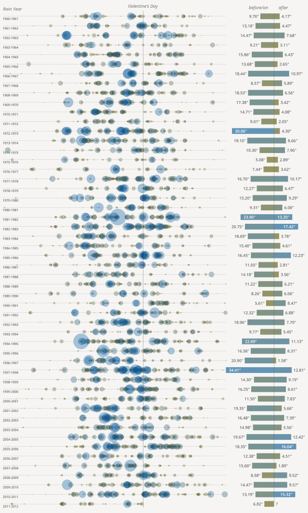
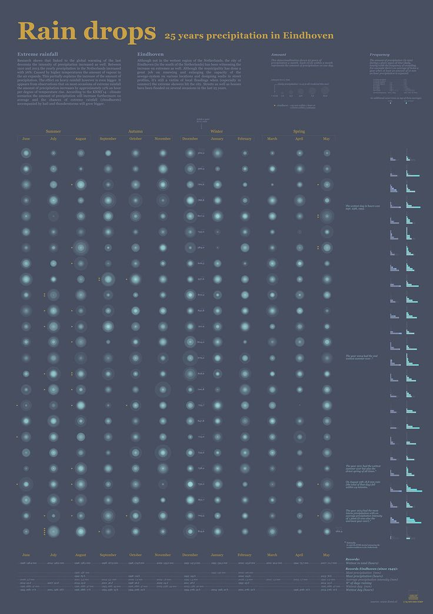
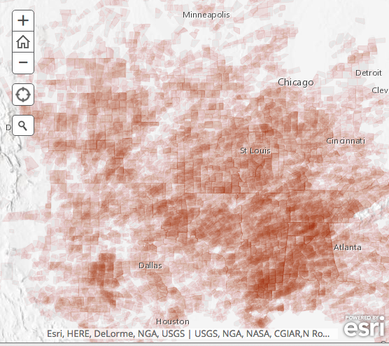

STORMVIEWER
VISUALIZATION
ADD A STORM
ABOUT STORMVIEWER
MORE RESOURCES
Resources
All data for the StormViewer project is available and accessible through the NCDC's
website
.
Coding Resources Used to Create Visualization:
Maptime Boston Tutorial on Github
Scott Murray's Aligned Left Tutorials
Interactive Data Visualization For The Web
Mike Bostock d3 Tutorials
Other Weather Data Visualizations and Info from around the web:

San Francisco Rainfall Data Vis

Studio Terp Rain drops Visualization

When The Skies Turn Dark: Tornado Warnings Map